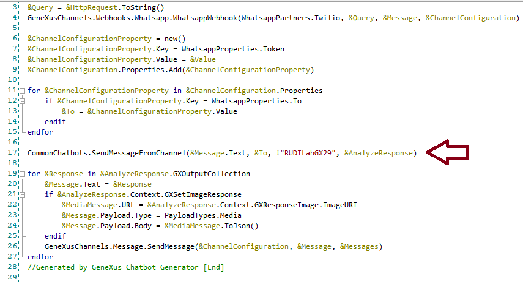
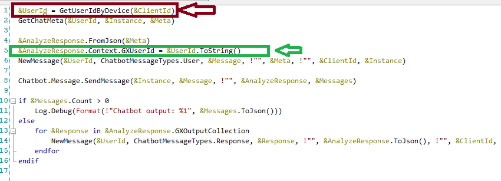

When the chatbot is exposed through WhatsApp, the user's ID (who receives the message) is retrieved in the webhook. Due to the architecture (the webhook is a service - a procedure with Call protocol property = HTTP), that information has to be persisted in a place where it can be retrieved afterwards from any other piece of code. Therefore, the information is persisted in the context so that it can be used elsewhere. Where in the code is the User ID persisted?The User ID is saved in the context in a procedure called SendMessageFromChannel which is called by the WhatsappWebhook object. If the Conversational Flows object has the Enable WhatsApp property set to TRUE, and the WhatsApp partner data is also configured (i.e.: Twilio Token property), the WhatsappWebhook is automatically generated.  There, in the SendMessageFromChannel procedure, the User ID is retrieved using the GetUserIdByDevice procedure. It receives the user message recipient as a parameter, and returns a User GUID which is saved in the context for that user:  How to use that informationAlthough it is saved in the AnalyzeResponse object, to retrieve it from any other piece of code, it has to be done using a variable of Context type where Context is an SDT under a module with the name <InstanceName>Chatbot. For example, if the Instance name is "Citizen," the Context SDT is under CitizenChatbot module. You can use the Context where it is instantiated. For example, a procedure where the context can be instantiated (because it is automatically received as a parameter) is the Validation Procedure of any user input. The following can be used to get the user's GUID: &UserIdContext = &Context.Context.GXUserId AvailabilitySince GeneXus 16 upgrade 10. |
| Backlinks |
| Toc:Chatbots in GeneXus |